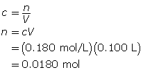
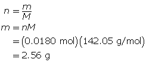
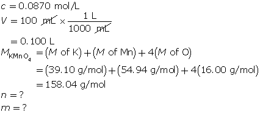
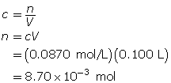
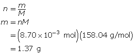

Module 4—Properties of Solutions
 Read
Read
Preparing a Solution by Dilution
Many labs prepare stock solutions of a specific chemical. Stock solutions are often used to create new, less concentrated solutions of the same solute by dilution, usually with water. A procedure for preparing a standard solution by dilution appears in "Preparing a Standard Solution by Dilution" on pages 803 and 804 of your textbook.
If you have access to the internet, view the following Solution by Dilution video which shows the process of using the lab equipment to dilute a solution. Your Username is nelsonchem_student and your password is nelsonchem_onlinelearning.
![Dilution formula representation. Left-hand side of equation: lower case c subscript lower case I multiplied to upper case V subscript lower case i. Below this half of the equation is a beaker containing a small volume of solution with an intense grey colour. The right hand side of the equation is lower case c subscript lowercase f multiplied by uppercase V subscript lower case f. Below the right-hand side of the equation is a beaker containing a larger volume of solution, but with a less intense shade of grey.](../../images/m4/044_flasks.jpg)
Dilution is the process of increasing the amount of solvent, resulting in a less concentrated solution.
Read “Preparation of Standard Solutions by Dilution” on pages 216 and 217 in your textbook. Work through the two "COMMUNICATION" examples as you will be answering similar questions.
What quantities of a solution change when it is diluted? Which quantities do not change?
The dilution formula ciVi = cfVf, is a convenient way to calculate changes that will occur when a dilution is performed. The variables in this equation are
ci = initial concentration of solution
Vi = initial volume of solution
cf = final concentration of solution
Vf= final volume of solution
Why is the dilution formula expressed as an equality? What chemical quantity is equal to both sides of the equation?
Now work through the following example problem.
Example 5: Calculate the volume of water necessary to dilute 50 mL of a 0.50-mol/L sodium chloride solution to 0.30 mol/L.


The final volume of the dilute solution is 83 mL. Since the volume transferred from the original solution was 50 mL, an additional 33 mL of water must be added to the original solution.
 Self-Check
Self-Check
SC 13. A 100-mL solution of 0.180-mol/L sodium sulfate is required. Determine the mass of sodium sulfate required to make this solution.
SC 14. A 100-mL potassium permanganate solution with a concentration of 0.0870 mol/L is required. Write out the pre-lab and procedure for making this solution.
SC 15. A stock solution of phosphoric acid with a concentration of 14.6 mol/L is available in a lab. From the stock solution, a 1.50-L phosphoric acid solution is to be created with a concentration of 0.400 mol/L. Determine the volume of stock solution required to make the new solution.
SC 16. A 1.00-L stock solution containing 99% V/V isopropyl alcohol is available. What volume of the stock solution is required to make 200 mL of a 70% V/V solution?
SC 17. A 17.8-mol/L concentrated sulfuric acid solution is available in a lab. A 1.00-L solution with a concentration of 0.800 mol/L is required. Write out the pre-lab and procedure for making this solution.
Self-Check Answers
SC 13.

First, determine the number of moles of sodium sulfate.

Now, determine the mass of sodium sulfate.

The mass of sodium sulfate required is 2.56 g.
SC 14.
Step 1: Calculate the number of moles of solute required; then determine the mass of potassium permanganate required.

First, determine the number of moles of potassium permanganate.

Now, determine the mass of potassium permanganate.

The mass of KMnO4(s) required is 1.37 g.
Step 2: Measure out 1.37 g of potassium permanganate in a clean, dry beaker using an electronic balance.
Step 3: Pour about 50 mL of distilled water into the beaker containing the potassium permanganate. Stir to dissolve the solute.
Step 4: Transfer the contents of the beaker into a 100-mL volumetric flask, rinsing out the beaker and collecting the rinse water in the volumetric flask.
Step 5: Add distilled water until the calibration line is almost reached; then add distilled water using an eyedropper until the calibration line is reached.
Step 6: Stopper the flask, and mix by inverting.
SC 15.
SC 16.
Note that the total volume of the stock solution (1.00 L) was not required for this question.
SC 17. Step 1: Calculate the volume of stock solution needed for the procedure.

Step 2: Pour approximately 0.5 L of distilled water into a 1.00-L volumetric flask.
Step 3: Measure 44.9 mL of sulfuric acid stock solution using a pipette.
Step 4: Slowly transfer the concentrated acid from the pipette to the volumetric flask containing the water. Caution: Mixing acids and water can produce a great deal of heat. Swirl the contents of the volumetric flask occasionally to distribute heat from the solution.
Step 5: Carefully add distilled water until the calibration line is almost reached; then use an eyedropper to add the water until the calibration line is reached. Swirl contents as in step 4 to distribute heat form the solution. If the flask feels too hot, stop adding water until the flask contents cool.
Step 6: Stopper the flask, and carefully mix by inverting.
 Module 4: Lesson 5 Assignment
Module 4: Lesson 5 Assignment
To complete your assignment as an online quiz, click on Module 4 Lesson 5 Assignment in the "Quizzes".
To complete your assignment as an MSWord document, click Module 4 Assignment 5.